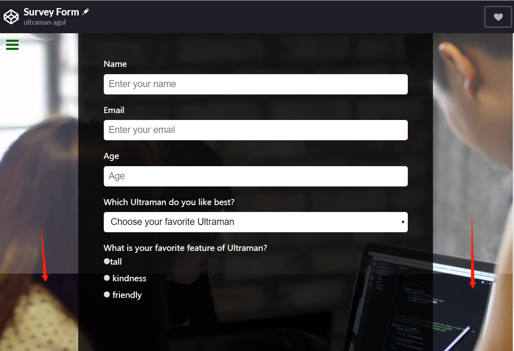
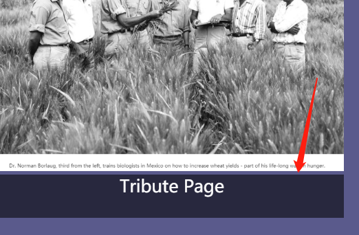
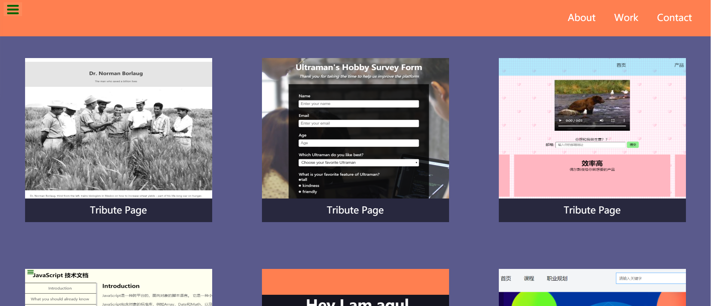

FreeCodeCamp-Projects
本文记录我在fcc中文社区刷的题，做的小项目。2020/4/1。
Responsive Web Design Projects
响应式网页设计项目。在此之前已经学过基本的知识，一天内把前面的小练习做完，现在是时候把学到的技能付诸实践了！通过接下来的项目，fcc让我有机会实践目前所学的技能，原理和概念，HTML，CSS，可视化设计，辅助功能等。
- 搭建致敬页
- 搭建调查表格
- 搭建产品主页
- 搭建技术文档页面
- 搭建个人作品集页面
致敬页
这个页面制作简单，很基本的页面，但有一个地方需要注意：
img元素应相对于其父元素的宽度响应地调整大小，但不超过其原始大小。
我一开始忽略了这个需求，看错误报告也发下缩小页面后图片不能自适应，对于手机端来说更是个大问题，所以为图片添加css样式
1 | #image { |
如此一来图片可以随着拉伸页面进行自适应了，问题也就解决了。( •̀ ω •́ )y
调查表单
给网页添加了背景图，但是发现这样会使文字看不清，想要实现背景图和颜色遮罩，我一开始想要使用伪类元素解决：
1 | body::after{ |
出现文字也被遮罩，所以我使用添加新标签，添加css为
1 | main { |
可以实现。
但是当内容高度大于窗口高度，需要滑动滚动条时，出现问题：

下方没有了遮盖，检查代码发现main标签添加了绝对定位absolute，虽然高度为100%，那是针对浏览器窗口大小所定的，并非随着body大小而改变，将
1 | position:absolute; |
去掉即可 。（尽量让代码简洁，不要出现多余的代码😵）
制作表单，让其居中时发现form始终无法居中，分析原因是form本身只是一个表单，对页面根本没有布局的作用，因此无法居中，解决方法是在form外面嵌套div标签，给div标签添加css样式text-align:center;解决。
产品登录页
运用flexbox可以布局灵活的页面.
1 | #nav-bar { |
媒体查询也是响应式布局的好方法。当视口宽度最大值小于400px时，padding:0;
1 | @media (max-width: 400px) { |
使用iframe给网页嵌入视频，点击全屏无反应，查阅资料说不建议使用iframe，bug多，改用video标签引入后可以使用。
1 | <video src="http://www.w3school.com.cn/i/movie.ogg" controls> |
flexbox和媒体查询的使用较为生疏，多使用才能熟练掌握。
技术文档
设计可以滚动的侧边导航栏：
1 | #navbar { |
媒体查询
1 | @media only screen and (max-width:800px) |
个人网站
插入图片下方有缝隙

添加图片样式，解决
1 | vertical-align:bottom; |
flex和grid是当前流行的布局方法。Grid 布局与 Flex 布局有一定的相似性，都可以指定容器内部多个项目的位置。但是，它们也存在重大区别。
Flex 布局是轴线布局，只能指定”项目”针对轴线的位置，可以看作是一维布局。Grid 布局则是将容器划分成”行”和”列”，产生单元格，然后指定”项目所在”的单元格，可以看作是二维布局。Grid 布局远比 Flex 布局强大。
我一开始使用flex布局实现下图：

1 | #flexx{ /*父盒子*/ |
使用grid布局
1 | #usegrid{ |
同样可以实现，更为方便。
在为project-title两边添加隐藏尖括号，鼠标悬停时显示时，使用
1 | .code{ |
导致文字位置发生移动。因为display:none;不会保留元素位置。
使用visibility可以解决，隐藏时保留位置。
1 | .code{ |
如果是文字的话，可以把内容颜色设为与背景色一致，悬停时改变颜色。
这几个小项目难度不大，但是需要留意小细节的地方，可以学到响应式布局的方法。https://hexo.io/docs/one-command-deployment.html)